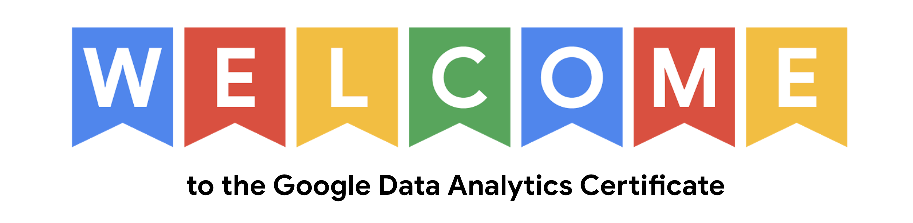
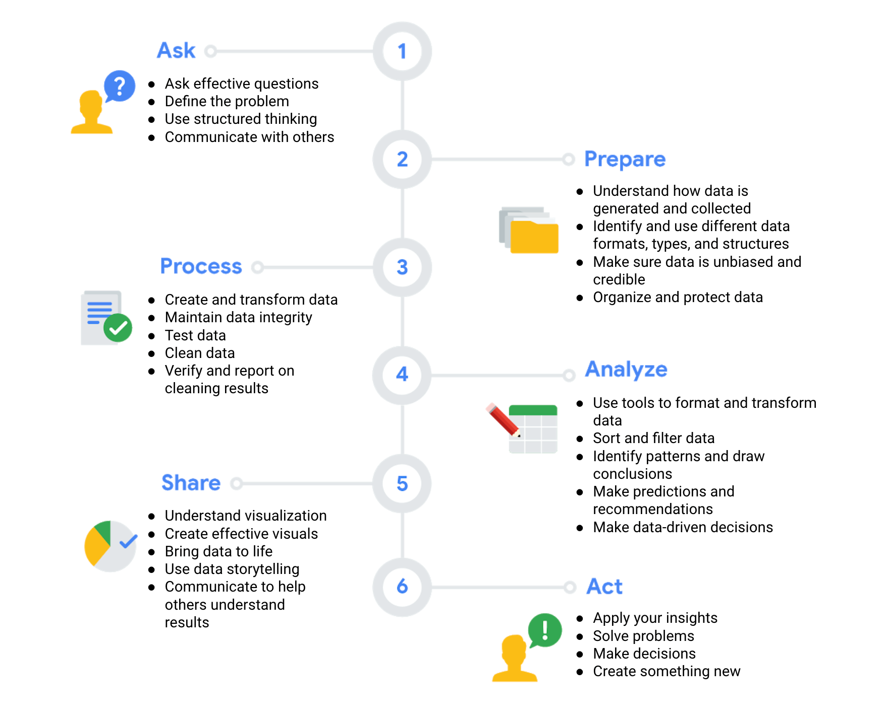

6 PHASES OF DATA ANALYSIS
Data analysis isn't a life cycle. It's the process of analyzing data.
Let's see each step of the data analysis process and how it will relate to the work of a data analyst.
There are 6 steps of data analysis: Ask, Prepare, Process, Analyze, Share & Act.

Let's start with the first step in data analysis, the ask phase.
In this phase, we do 2 things. We define the problem to be solved and we make sure that we fully understand stakeholder expectations.
Let's break that down. First, defining a problem means you look at the current state and identify how it's different from the ideal state.
Usually there's an obstacle we need to get rid of or something wrong that needs to be fixed.
Another important part of the ask phase is understanding stakeholder expectations. The first step here is to determine who the stakeholders are.
That may include your manager, an executive sponsor, or your sales partners. There can be lots of stakeholders.
But what they all have in common is that they help make decisions, influence actions and strategies, and have specific goals they want to meet.
They also care about the project and that's why it's so important to understand their expectations.
Communicating with your stakeholders is key in making sure you stay engaged and on track throughout the project.
So as a data analyst, developing strong communication strategies is very important. This part of the ask phase helps you keep
focused on the problem itself, not just its symptoms.
Next, we'll move on to the prepare step.
This is where data analysts collect and store data they'll use for the upcoming analysis process. Notice that
there are the different types of data and we should identify which kinds of data are most useful for
solving a particular problem. It's so important that data and results are objective and unbiased.
In other words, any decisions made from analysis should always be based on facts and be fair and impartial.
Next is the process step.
Here, data analysts find and eliminate any errors and inaccuracies that can get in the way of results.
This usually means cleaning data, transforming it into a more useful format, combining two or more datasets
to make information more complete and removing outliers, which are any data points that could skew the
information. Check the data to make sure it's complete and correct. This phase is all about getting
the details right. So we'll also fix typos, inconsistencies, or missing and inaccurate data.
Then it's time to analyze.
Analyzing the data we've collected involves using tools to transform and organize that information so
that we can draw useful conclusions, make predictions, and drive informed decision-making.
There are lots of powerful tools data analysts use in their work such as spreadsheets and
structured query language, or SQL, which is often pronounced "sequel."
Let's move on to the exciting part - the share phase.
Here data analysts will interpret results and share them with others to help stakeholders
make effective data-driven decisions. In the share phase, visualization is a data analyst's best friend.
It is essential to getting others to understand what the data is telling about.
With the right visuals, facts and figures become so much easier
to see and complex concepts become easier to understand.
For our final data analysis phase, we have act.
This is the exciting moment when the business takes all of the insights the data analyst have
provided and puts them to work in order to solve the original business problem.
This note is part of Google Data Analytics Specialization Course that I attended in 2021.